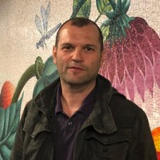
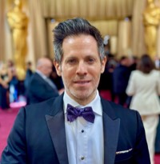
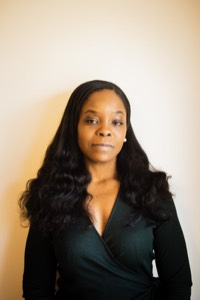

Pulitzer Prize winners
84 people whose festival biography mentions Pulitzer Prize winners. A mention can mean a job, a past job, a grant, a broadcast or an award: read the bio for which.


 Brett A. PulleyFestival team · 6 editions, 2017–2024
Brett A. PulleyFestival team · 6 editions, 2017–2024 Steve SapienzaPanelist · 4 editions, 2017–2025
Steve SapienzaPanelist · 4 editions, 2017–2025 Michael RezendesPanelist, moderator, workshop leader · 3 editions, 2015–2023
Michael RezendesPanelist, moderator, workshop leader · 3 editions, 2015–2023

 Violeta AyalaFilmmaker, panelist · 2 editions, 2017–2021
Violeta AyalaFilmmaker, panelist · 2 editions, 2017–2021

 Thomas ClementPanelist, filmmaker · 2 editions, 2024–2026
Thomas ClementPanelist, filmmaker · 2 editions, 2024–2026- Leslye DavisPanelist · 2 editions, 2020–2021
 Ronnie GreeneModerator · 2 editions, 2024–2025
Ronnie GreeneModerator · 2 editions, 2024–2025

 Hanna Lane MillerPanelist, filmmaker · 2 editions, 2018–2025
Hanna Lane MillerPanelist, filmmaker · 2 editions, 2018–2025 Laura PoitrasFilmmaker, panelist · 2 editions, 2025–2026
Laura PoitrasFilmmaker, panelist · 2 editions, 2025–2026
 Shirley AbrahamPanelist · 2021
Shirley AbrahamPanelist · 2021- Lisa ArmstrongModerator · 2016
- Martin BaronPanelist · 2015
- Katie BennerPanelist · 2021
- Jake BernsteinPanelist · 2016

 Sara ColmPanelist · 2015
Sara ColmPanelist · 2015- Ben Conarck2026
- Luisa ConlonFilmmaker · 2018
- Catrin EinhornPanelist · 2020

- Justin FentonPanelist · 2023
- Susan Ferriss2022
- Eleanor Bell FoxWorkshop leader · 2017

 Robin GivhanModerator · 2025
Robin GivhanModerator · 2025 Sabrina Schmidt GordonPanelist · 2021
Sabrina Schmidt GordonPanelist · 2021
Erica GreenPanelist · 2021 Seymour HershFilm subject, panelist · 2025
Seymour HershFilm subject, panelist · 2025

- Minna Knus-GalánPanelist · 2021
 Jarrett LeyPanelist · 2026
Jarrett LeyPanelist · 2026- Boyoung LimPanelist · 2021
 Ellen NakashimaModerator · 2025
Ellen NakashimaModerator · 2025- Sacha PfeifferPanelist · 2015
 Amy SchwartzModerator · 2024
Amy SchwartzModerator · 2024 Ian ShapiraModerator · 2025
Ian ShapiraModerator · 2025 Ray SotoPanelist · 2021
Ray SotoPanelist · 2021 Joe StephensPanelist · 2021
Joe StephensPanelist · 2021 Ray Whitehouse2025
Ray Whitehouse2025